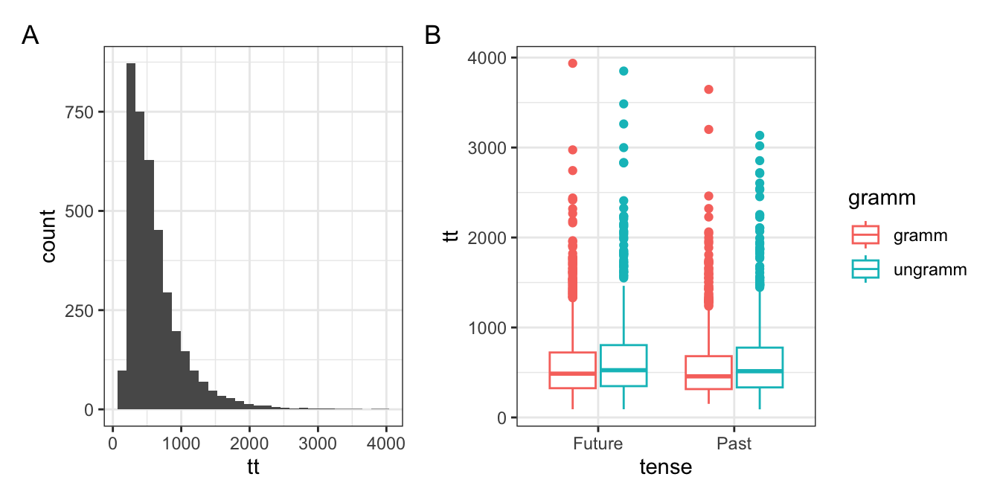

| Satz | Adverb | Verb | Grammatikalität |
|---|---|---|---|
| A la salida del trabajo, ayer las chicas compraron pan en la tienda. (DE:) Nach der Arbeitgestern kauften die Mädchen Brot im Laden | past | past | gramm |
| A la salida del trabajo, ayer las chicas *comprarán pan en la tienda. (DE:) Nach der Arbeitgestern *werden die Mädchen im Laden Brotkaufen | past | future | ungramm |
| A la salida del trabajo, mañana las chicas comprarán pan en la tienda. (DE:) Nach der Arbeitmorgen die Mädchenwerden Brot im Ladenkaufen | future | future | gramm |
| A la salida del trabajo, mañana las chicas *compraron pan en la tienda. (DE:) Nach der Arbeitmorgen die Mädchen *kauften Brot im Laden* | future | past | ungramm |
14 Bericht 2
Der Zweck dieses Berichts ist es, das, was wir in den letzten Wochen gelernt haben, mit dem zu konsolidieren, was wir zuvor gelernt haben. Sie werden einen Datensatz aus einem veröffentlichten Eye-Tracking-Lesebericht (Biondo et al., 2022) laden, der auf Moodle verfügbar ist. Falls Sie diesen Kurs nicht auf Moodle verfolgen, ist der Datensatz auch auf dem Open Science Framework unter https://osf.io/x8vc7 frei zugänglich.
Sie können Ihr eigenes Quarto-Skript von Grund auf erstellen oder ein leeres Skript verwenden, das ich mit den Fragen und den entsprechenden Überschriften erstellt habe. Sie können dieses Skript auf Moodle oder online hier finden.
Beschreibung des Datensatzes
Diese Beschreibung soll einen gewissen Kontext zu dem Datensatz liefern. Der Zweck dieses Berichts ist es jedoch, Ihre Fähigkeit zu demonstrieren, die Daten zu laden, zu verarbeiten, zusammenzufassen und darzustellen. Auch wenn Ihnen die Konzepte, die für den Datensatz relevant sind, nicht klar sind, werden Sie in der Lage sein, die Aufgaben zu lösen.
Der Datensatz enthält Eye-Tracking-Lesezeiten über Satzregionen hinweg für spanische Sätze mit einem zukunfts- oder vergangenheitsbezogenen temporalen Adverb (z.B., gestern* oder morgen* auf Deutsch) am Satzanfang und einem Verb in der Vergangenheits- oder Zukunftsform am Ende des Satzes. Eine entscheidende Manipulation war, ob die Zeitform des Verbs mit dem vorangehenden temporalen Adverb übereinstimmte oder nicht. Tabelle 14.1 enthält einige Beispielstimuli.
Für die Zwecke dieses Berichts sind folgende Variablen von Interesse:
verb_t: Verbform (Past/Vergangenheit oderFuture/Zukunft)gramm: Grammatikalität (grammoderungramm)roi: Region von Interesse (2= Adverb,4= Verb)- die Maßnahmen
fp: First-Pass-Lesezeit in Millisekonden (die Dauer des Blicks auf die Region beim ersten Sehen) undtt: Gesamtlesezeit in Millisekonden, (total reading time auf Englisch; die Gesamtdauer des Blicks auf die Region während der gesamten Satzpräsentation)
Längere Eye-Tracking-Lesezeiten sind in der Regel mit Schwierigkeiten beim Sprachverständnis verbunden. Es hat sich beispielsweise gezeigt, dass syntaktisch komplexe Sätze (im Gegensatz zu einfachen Sätzen) oder Wörter, die im vorangegangenen Kontext ungrammatisch sind (im Gegensatz zu grammatikalischen Wörtern), längere Lesezeiten hervorrufen. Aus diesem Grund würden wir erwarten, dass die Lesezeiten unter ungrammatischen Bedingungen länger sind als unter grammatikalischen Bedingungen. Eine weitere Forschungsfrage von Biondo et al. (2022) war, ob es Unterschiede in der Verarbeitung (d. h. in den Lesezeiten) zwischen den Zeitformen Vergangenheit und Zukunft gibt.
Durch die Untersuchung dieses Datensatzes sind wir an folgenden Fragen interessiert:
- Unterscheiden sich die Eye-Tracking-Lesemessungen (First-Pass-Lesezeit, Gesamtlesezeit) in den Adverb- und Verbregionen zwischen
- grammatischen und ungrammatischen Sätzen?
- Vergangenheits- und Zukunftsformen?
Sie werden Diagramme und zusammenfassende Statistiken erstellen, um diese Fragen zu beantworten.
14.1 Einrichten
Führen Sie den folgenden Code aus, um Ihre Umgebung für die folgenden Aufgaben einzurichten.
Packages
Führen Sie den folgenden Code aus, um die erforderlichen Pakete zu laden: tidyverse, here, janitor, und patchwork.
pacman::p_load(
tidyverse,
here,
janitor,
patchwork
)Daten laden
Nachfolgend finden Sie einen Code, der einen Datensatz von Biondo et al. (2022) lädt, eine Studie zur Beobachtung von Augenbewegungen beim Lesen. Es gibt einen Kommentar, in dem beschrieben wird, was die einzelnen Zeilen bewirken, falls Sie daran interessiert sind. Dieser Datensatz muss zuerst heruntergeladen und in Ihrem Daten-Ordner gespeichert werden.
df_biondo <-
read_csv(here("daten", "Biondo.Soilemezidi.Mancini_dataset_ET.csv"),
1 locale = locale(encoding = "Latin1")) |>
2 clean_names() |>
3 mutate(gramm = ifelse(gramm == 0, "ungramm", "gramm")) |>
4 filter(adv_type == "Deic",
roi %in% c(2,4)) - 1
- spezielle Formatierung für spanische Zeichen
- 2
- tidy Variablennamen
- 3
- Grammatikalität umschlüsseln
- 4
- nur Beobachtungen von deiktischen Adverbien behalten und die Satzregionen Adverb (2) und Verb (4)
Datenumwandlung 1: Transformation
Fügen Sie unter Verwendung von Pipes (|>) dem obigen Code-Stück eine Zeile hinzu:
- eine Zeile, in der Sie die Variable
verb_tintenseumbenennen - eine Zeile, in der Sie nur die Variablen
roi,label,tense,gramm,fp, undttauswählen
Sie sollten dann einen Datenrahmen mit 7680 Beobachtungen und 6 Variablen haben. Die ersten sechs Zeilen sollten wie folgt aussehen:
# A tibble: 6 × 6
roi label tense gramm fp tt
<dbl> <chr> <chr> <chr> <dbl> <dbl>
1 2 ayer temprano Past gramm 474 474
2 4 encargaron Past gramm 1027 1027
3 2 el próximo año Future gramm 593 1356
4 4 coleccionarán Future gramm 562 1337
5 2 el verano pasado Past gramm 1185 1185
6 4 esquilaron Past gramm 293 114114.2 Plot-Interpretation: Verteilung
Betrachten Sie Abbildung 14.1 A und B und beschreiben Sie die Diagramme. Beide enthalten nur Daten aus der Verbregion eines Satzes (roi == 4). Geben Sie den ungefähren Modus sowie die Minimal- und Maximalwerte für den gesamten Datensatz (Abbildung 14.1 A) und den Median, den Minimal- und den Maximalwert pro Bedingung (Abbildung 14.1 B) an.

14.3 Data wrangling 2: Aufräumen
Verwenden Sie die Funktion pivot_longer(), um den Datensatz zu verlängern, wobei die Spalten (cols =) fp und tt zu einer Spalte (names_to =) namens measure werden und ihre Werte in einer Spalte (values_to =) namens time gespeichert werden. Speichern Sie das Ergebnis als df_longer. Es sollte 15360 Beobachtungen und 6 Spalten enthalten.
df_longer <-14.4 Zusammenfassende Statistik
Verwenden Sie die Funktion summarise(), um den Mittelwert und die Standardabweichung von time zu ermitteln. Gruppieren Sie die Ergebnisse nach measure, tense, gramm und roi (entweder mit .by = oder group_by()).
sum_et <-Drucken Sie die Zusammenfassung.
14.5 Visualisierung zusammenfassender Statistiken
In dieser Aufgabe erstellen Sie zwei Fehlerdiagramme und drucken sie nebeneinander aus.
Adverb-Region
Erzeugen Sie ein Fehlerdiagramm namens fig_adverb für die Region adverb (roi == 2) der soeben erstellten Zusammenfassung mit folgender Ästhetik: + Grammatikalität auf der x-Achse + Mittelwert auf der y-Achse + Zeitform als Farbe und Form + Fehlerbalken mit +/- 1 Standardabweichung + Facetten für die Messung + ein geeigneter Titel für die Darstellung und Beschriftungen der x- und y-Achse
fig_adverb <-Verb-Region
Erzeugen Sie die gleiche Darstellung für die Region verb (roi == 4) mit dem Namen fig_verb.
Tipp: Sie können einfach den Code aus der Darstellung der Adverbregion kopieren und die Region (roi) in das Verb ändern!
fig_verb <-Plots drucken
Stellen Sie Ihre beiden Fehlerbalken nebeneinander dar, indem Sie das Paket patchwork verwenden
14.6 Plot-Interpretation: zusammenfassende Statistiken
Beschreiben Sie etwaige Unterschiede zwischen den Bedingungen und Regionen auf der Grundlage der von Ihnen erstellten Zusammenfassung und der aus der Zusammenfassung generierten Diagramme.